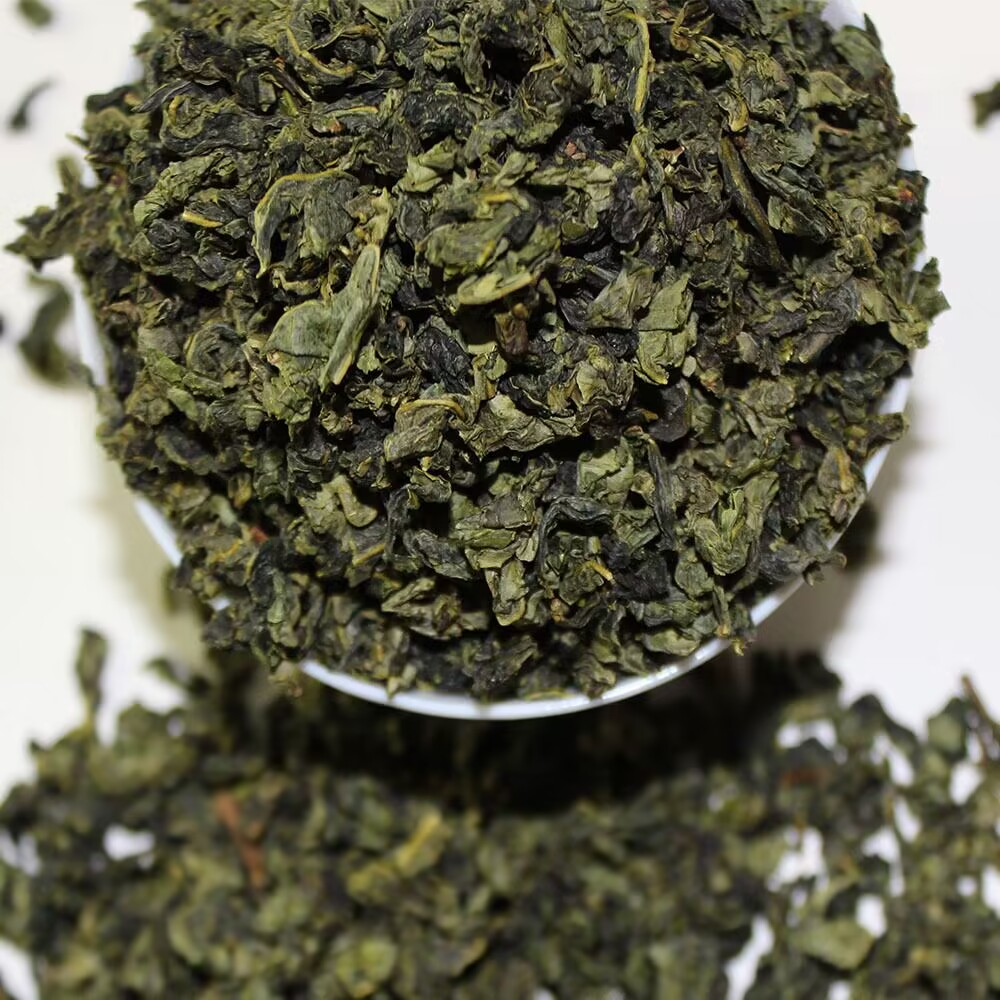

日本研究者从1994年起对某地4万多名40岁至79岁 … 有降低胆固醇和血压的作用香港大学研究人员发现，喝茶可使血总胆固醇水平下降25%。还有一项研究喝茶与高血压发病关系的调查发现，不喝茶的人高血压的发病率为10.55%，常喝茶的人为6.95%，茶的确有一定的降压作用。
有助于减小患糖尿病的风险有研究者对1.7万名40岁-65岁男女进行长期追踪观察发现，一天喝6 … 有助于防治早老性痴呆茶对大脑细胞有保护作用，茶能有效延缓大脑退化，有助于维持大脑血管的健康。最新研究表明，多喝茶可改善记忆力和防止早老性痴呆

| 茶叶 | 品牌 | 价格 |
|---|---|---|
| 普洱 | 下关 | |
| 铁观音 | 海堤 | 10 |